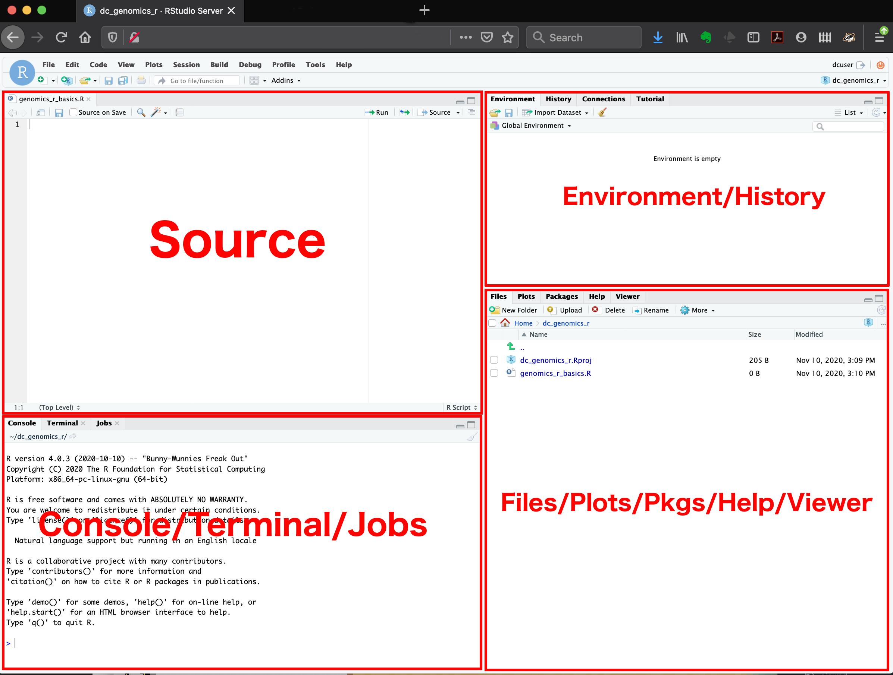

Introduction to R and R Studio
Learning Objectives
- Understand the value of learning R
- Navigate RStudio
- Define terms: object, function, argument, package, vector, data frame.
- Use help documentation in RStudio.
Why learn R?
R is free, open-source, and cross-platform. Anyone can inspect the source code to see how R works. Because of this transparency, there is less chance for mistakes, and if you (or someone else) find some, you can report and fix bugs. Because R is open source and is supported by a large community of developers and users, there is a very large selection of third-party add-on packages which are freely available to extend R’s native capabilities.
R code is great for reproducibility. Reproducibility is when someone else (including your future self) can obtain the same results from the same dataset when using the same analysis. R integrates with other tools to generate manuscripts from your code. If you collect more data, or fix a mistake in your dataset, the figures and the statistical tests in your manuscript are updated automatically.
R relies on a series of written commands, not on remembering a succession of pointing and clicking. If you want to redo your analysis because you collected more data, you don’t have to remember which button you clicked in which order to obtain your results; you just have to run your script again.
R is interdisciplinary and extensible With 10,000+ packages that can be installed to extend its capabilities, R provides a framework that allows you to combine statistical approaches from many scientific disciplines to best suit the analytical framework you need to analyze your data. For instance, R has packages for image analysis, GIS, time series, population genetics, and a lot more.
R works on data of all shapes and sizes. The skills you learn with R scale easily with the size of your dataset. Whether your dataset has hundreds or millions of lines, it won’t make much difference to you. R is designed for data analysis. It comes with special data structures and data types that make handling of missing data and statistical factors convenient. R can connect to spreadsheets, databases, and many other data formats, on your computer or on the web.
R produces high-quality graphics. The plotting functionalities in R are endless, and allow you to adjust any aspect of your graph to convey most effectively the message from your data.
R has a large and welcoming community. Thousands of people use R daily. Many of them are willing to help you through mailing lists and websites such as Stack Overflow, or on the RStudio community. Questions which are backed up with short, reproducible code snippets are more likely to attract knowledgeable responses.
Starting out in R
R is both a programming language and an interactive environment for data exploration and statistics.
Working with R is primarily text-based. The basic mode of use for R is that the user provides commands in the R language and then R computes and displays the result.
Downloading, Installing and Running R
Download
R can be downloaded from CRAN (The Comprehensive R Archive Network) for Windows, Linux, or Mac.
Install
Installation of R is like most software packages and you will be guided. Should you have any issues or need help you can refer to R Installation and Administration
Running
R can be launched from your software or applications launcher or When working at a command line on UNIX or Windows, the command R can be used for starting the main R program in the form R
You will see a console similar to this appear:
While it is possible to work solely through the console or using a command line interface, the ideal environment to work in R is RStudio.
RStudio
We will be working in RStudio.
The console provides an interactive way of working with R; you enter commands and view results. RStudio surrounds this with various conveniences.
RStudio is divided into four “panes”. The placement of these panes and their content can be customized (see menu, Tools -> Global Options -> Pane Layout).
The Default Layout is:
- Top Left - Source: your scripts and documents
- Bottom Left - Console: what R would look and be like without RStudio
- Top Right - Environment/History: look here to see what you have done
- Bottom Right - Files and more: see the contents of the project/working directory here, like your Script.R file

Posit Cloud
Posit Cloud is a browser-based version of RStudio (Posit being the company that owns RStudio). It will allow you to use RStudio without needing to download anything to your computer. You can also easily share your R projects with others. While we recommend downloading RStudio for regular use, there may be times you find it helpful to have a cloud based solution.
Setting up a project
A R Project is an RStudio feature that makes it easy to keep all scripts, data, and other material together for a given project.
To create a new project go to
File > New Project > Create Project From Existing Directory
Then we can use the wizard to navigate to the r_lesson folder on our Desktop. For now you can leave the Open in New Session button unchecked.
Now you should notice an .Rproj file in your files pane. This is essentially a container file for everything in this directory.